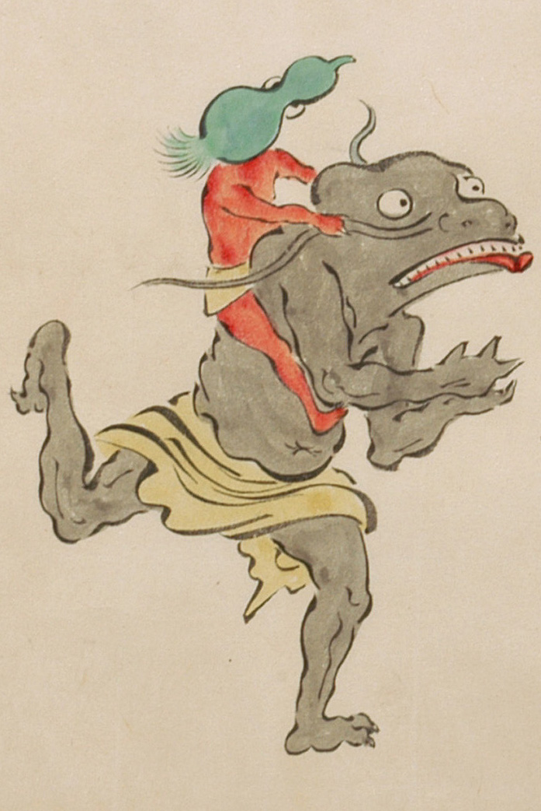

鯰のような化物。茶色の腰布をまとっている。頭は禿げて潰れ、両目は丸く大きい。耳がなく、鼻は横に広がり、口は横に裂けて上顎に並んだ歯が見えている。下唇は赤く、口ひげは長く伸び、背負った瓢箪のような化物につかまれている。手足の指は3本で鋭い爪が生えている。右側に向って走っている。
出典：親書誌：U426_nichibunken_0053：化物婚礼絵巻；バケモノコンレイエマキ／日付：2006／資源識別子：U426_nichibunken_0053_0024_0002
Copyright (c)2010- International Research Center for Japanese Studies, Kyoto, Japan. All rights reserved.